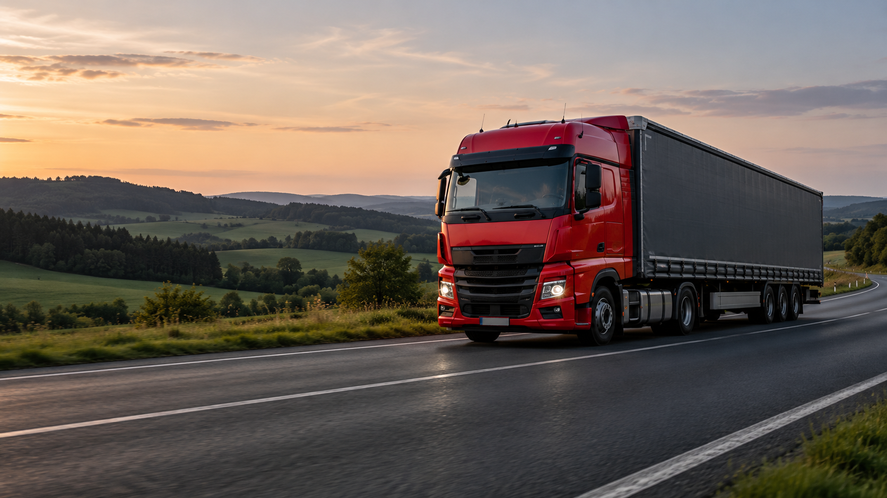
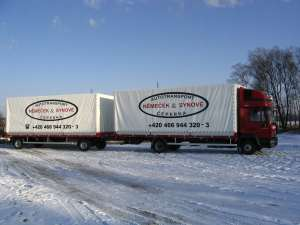

01 /ČESKÁ REPUBLIKA
Vnitrostátní
autodoprava
Paletové zboží, hutní materiál, stroje i volně ložený náklad. Vlastní vozidla pro přepravu do 24 tun.
Vybrat vozidlo
RODINNÁ AUTODOPRAVA OD ROKU 1997
Od jedné palety po plný návěs. Vlastní vozidla, zkušený dispečink a přeprava po celé České republice.
Rok založení
rodinné firmy
Od menších nákladů
po kompletní přepravu
Vnitrostátní doprava
a evropská spedice
CO PRO VÁS ZAJISTÍME
Jeden kontakt pro přepravu, logistiku i stěhování. Zvolíme řešení podle Vašeho nákladu a místa doručení.
Paletové zboží, hutní materiál, stroje i volně ložený náklad. Vlastní vozidla pro přepravu do 24 tun.
Vybrat vozidloNávaznou přepravu po ČR a Evropě pomůže zorganizovat tým dispečerů. Pro jednorázové i rozsáhlejší potřeby.
Poptat spediciStěhování po České republice i Evropě. Vozidla s hydraulickým čelem usnadní nakládku a vykládku.
Poptat stěhováníServis a opravy valníkových vozidel. Rozsah práce a vhodný termín s Vámi domluvíme telefonicky.
Domluvit opravuNÁŠ VOZOVÝ PARK
Vyberte hmotnost a prohlédněte si možnosti přepravy. Konkrétní vůz a nakládku upřesníme podle Vaší poptávky.

AUTOTRANSPORT / VLASTNÍ VOZIDLASKŘÍŇ / VALNÍK S PLACHTOU
Pro menší dodávky a paletové zboží. Možnost hydraulického čela pro snadnější manipulaci s nákladem.
Rozměry se mohou lišit podle konkrétního vozidla.
Paletové zboží
Strojní zařízení
Hutní materiál
Potraviny
Volně ložené zboží
NĚMEČEK & SYNOVÉ
Začali jsme jedním nákladním automobilem. Dnes provozujeme vlastní vozový park a zajišťujeme přepravu po celé republice.
Naše zázemí je v Čeperce, mezi Pardubicemi a Hradcem Králové. Na region navazují přepravy po celé ČR a spediční služby do Evropy.
Vlastní vozidlaPřímé zajištění vnitrostátní přepravy.
Zkušený dispečinkDomluva vhodného vozidla i způsobu nakládky.
Možnosti nakládkyHydraulické čelo, jeřáb nebo paletový vozík.
POJĎME TO NAPLÁNOVAT
Napište základní údaje o přepravě. Podle trasy a nákladu se domluví vhodné vozidlo i cena.
JSME VÁM NA BLÍZKU
Čeperka, Pardubice, Hradec Králové.
A odtud kamkoliv po České republice.